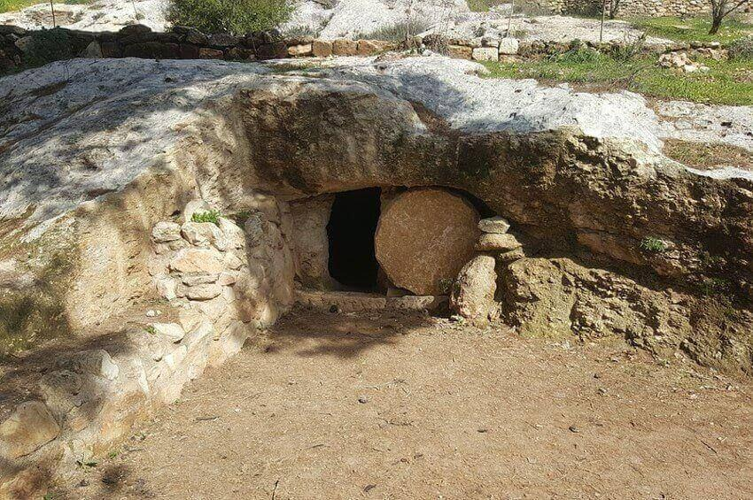

Since, then, the tomb is empty and none of the scenarios above holds, we are led logically to the conclusion that there was a resurrection. The way it happened is miraculous, but the event is historical!
Besides, the account of the Resurrection has none of the features that mark a mythology:
- A myth needs a good deal of time to spread, so that the generation of the time it refers to has passed away and there is no danger of anyone being able to disprove it. But the Resurrection of Christ was regarded as an undeniable fact from the third day after His death, and on the day of Pentecost and in the years that followed, no one from that generation, or from that place (Jerusalem), came forward to disprove the Resurrection.
- The opposing chief priests and Pharisees had every motive, and the power and means, to fight and stifle the spreading of the Resurrection. But they could not succeed, despite threats and persecutions, because everyone was convinced of the truth of the event.
- The account of the Resurrection is not embellished or decorated with details meant to impress the reader, as is usual in mythologies.
- The Gospels place some women as the first witnesses of the Resurrection – absurd for the author of a mythology who wanted to convince people of the events he describes, since at that time a woman’s testimony had no value and her word was not accepted in a court of law.
- It would have been impossible for the Christians, and especially the apostles, to agree to sacrifice their lives for something they knew very well was a lie. Rather, their love for their Teacher would have turned to hatred once they realised that, although they had left their families and possessions to follow Him, His promises were proving false.
But the risen Christ showed Himself “by many infallible proofs” for forty days and to more than five hundred people. He appeared to particular people, in particular places and at particular times, which are recorded in detail in the texts of the New Testament (Mark 16:9–14 and 1 Corinthians 15:6–8). The Resurrection was also bodily. The disciples admit, with complete honesty and objectivity, that they themselves found it hard to be convinced that they were seeing the risen Christ in front of them, not as a spirit but with a body. And once they were assured of it, there was no room for any doubt in them that their Teacher had truly risen.
The Resurrection of Jesus Christ, as a real event, had and still has results:
- It leads to the transformation of a person’s life through new birth and the baptism with the Holy Spirit. Death is undone as the consequence of sin, and the person is set free, receives eternal life and becomes a child of God. None of this could still be happening today if Christ had not risen.
- It confirms the truth of all Christ’s words, since He Himself linked His trustworthiness with His power to rise from the dead. So since this was true and came to pass, everything else He said is true and is coming to pass too.
If Christ had not risen, the disciples would have felt disappointed and betrayed by a man who had persuaded them to leave everything and follow him, relying on a false hope. But we see the disciples transformed into fearless preachers of the Resurrection, so sure of it that they were willing even to die for this faith. And all those Christians through the centuries who have known Him, and who confess their personal experience with Jesus Christ, become true witnesses of His Resurrection.
So let us say with the apostle Peter: “Blessed be the God and Father of our Lord Jesus Christ, which according to his abundant mercy hath begotten us again unto a lively hope by the resurrection of Jesus Christ from the dead, to an inheritance incorruptible, and undefiled, and that fadeth not away, reserved in heaven for you.” (1 Peter 1:3–4)
The Lord is risen and is coming to receive His church!
“And the Spirit and the bride say, Come. And let him that heareth say, Come. And let him that is athirst come. And whosoever will, let him take the water of life freely.” (Revelation 22:17)
“He which testifieth these things saith, Surely I come quickly. Amen. Even so, come, Lord Jesus.” (Revelation 22:20)
Published in the team's column in the newspaper “Christianity”, .